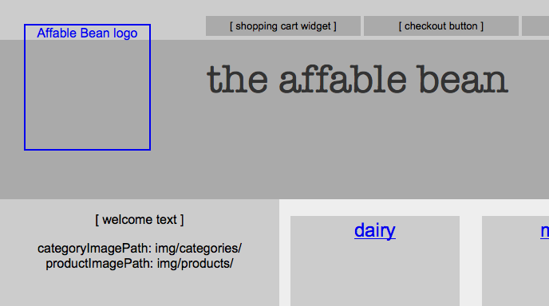
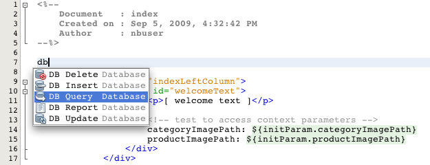

Apache NetBeans
Apache NetBeansLatest release
NetBeans Ｅコマース チュートリアル－データベースへのアプリケーションの接続
| This tutorial needs a review. You can edit it in GitHub following these contribution guidelines. |
この単元は、データベースとアプリケーション間の通信について説明しています。あなたはデータベースにサンプルデータを追加し、IDE の SQL エディタによって提供されるいくつかの機能を調べることから始めます。あなたは GlassFish サーバーにデータソースとコネクションプールを設定し、簡単な JSP ページを作成してデータベースに単純なクエリを発行してデータソースをテストします。
この単元はまた、アプリケーションが Web 表示用の画像を取得して表示する方法と、コンテキストパラメータを設定して Web ページからその値を取得する方法に取り組みます。データソースが正しく動作していると確信している場合は、JSTL core と sql タグライブラリを適用して、index ページとcategory ページでカテゴリと製品画像を取得して表示します。
あなたはこの単元で構築するアプリケーションのライブデモを見ることができます： NetBeans E コマース チュートリアル－アプリケーションのデモ。
| ソフトウェアまたはリソース | 必須バージョン |
|---|---|
Java バンドル版, 6.8 または 6.9 |
|
バージョン 6 |
|
バージョン 5.x |
|
GlassFish サーバー |
v3 または Open Source Edition 3.0.1 |
スナップショット 2 |
|
n/a |
メモ：
-
NetBeans IDE を正常に実行するには Java 開発キット（ JDK ）が必要です。上記のリソースの何も持っていない場合は、まず最初に JDK をダウンロードしインストールする必要があります。
-
NetBeans IDE Java バンドル版には、Java Web と JAVA EE 技術が入っており、このチュートリアルで構築するアプリケーションに必要です。
-
また、NetBeans IDE Java バンドル版にはこのチュートリアルで必要な GlassFish サーバーが入っています。あなたは、個別に GlassFish サーバーをダウンロードできますが、NetBeans ダウンロードで提供するバージョンはそれを自動的に IDE に登録してくれる利点があります。
-
あなたは前の単元を完了することなく、このチュートリアルの単元を理解することができます。次の3つの手順で行います：
-
*MySQL データベースサーバをセットアップします。*データベースサーバーと接続するに書いてある手順に従います。下記にアウトラインを示します。
-
-
*データベースサーバーに affablebean スキーマを作成します。 *
-
affablebean_schema_creation.sql をクリックして、そのファイル全部をコピーします。（ Ctrl-C、⌘-C Macで）。
-
-
IDE の SQL エディタを開きます。サービスウィンドウ（Ctrl-5、⌘-5 Macの場合）で、
affablebeanデータベース接続( )ノードを右クリックし「 Execute Command コマンドの実行」を選択します。 IDE の SQL エディタが開きます。
)ノードを右クリックし「 Execute Command コマンドの実行」を選択します。 IDE の SQL エディタが開きます。
-
エディターの中で affablebean.sql ファイルの内容を全部貼付け（ Ctrl+V。⌘-V Macの場合）します。
-
エディタのツールバーの「 Run SQL (Sqlを実行)」(
 ) ボタンを押します。スクリプトが MySQL サーバ上で実行されます。affablebean データベース テーブルが生成されます。
) ボタンを押します。スクリプトが MySQL サーバ上で実行されます。affablebean データベース テーブルが生成されます。
-
IDE で プロジェクトのスナップショットを開きます。IDE で、Ctrl-Shift-O、(⌘-Shift-O on Mac) を押して、ダウンロードしたファイルを解凍した場所をコンピュータに指示します。
データベースへサンプルデータを追加する
サンプルデータを category と product テーブルに追加することから始めます。あなたがこれを行うには、IDE の SQL エディタで、ネイティブ SQL を使用して直接データベースと対話することができます。また IDE の SQL サポートには、追加、削除、変更、およびテーブルのレコード削除ができる GUI エディタがあります。
カテゴリテーブル category table
-
サービスウィンドウ（Ctrl-5、⌘-5 Macの場合）で、カテゴリ テーブル (
 )ノードを右クリックし、「 View Data(データ表示)」を選択します。SQL エディタが開き、下の領域内に
)ノードを右クリックし、「 View Data(データ表示)」を選択します。SQL エディタが開き、下の領域内に categoryテーブルが GUI 表現で表示されます。テーブルが空で、データはまだ追加されていないことに注意してください。

Figure 1. Use the SQL editor to view table data in the IDE
また、GUI 表現で生成され使用されるネイティブ SQL クエリはエディタの上部領域に表示されることに気づいて下さい： [ select * from category ]（カテゴリから＊（すべて）選択）。
-
「‘select * from category’」を削除し、次の SQL 文を入力してください：
INSERT INTO `category` (`name`) VALUES ('dairy'),('meats'),('bakery'),('fruit & veg');この文は、4つの新しいレコードを挿入します。それぞれは [ name ] 列に一意のエントリを持っています。スキーマを作成するとき、id 列は、AUTO_INCREMENT に設定されているので、あなたが値を設定することを心配する必要はありません。
-
エディタのツールバーの「 Run SQL (sqlの実行)」(
) ボタンを押します。SQL ステートメントが実行されます。
-
データが追加されていることを確認するには、再度「
select * from category」クエリを実行します。これを行うには、[ SQL History (SQL履歴)]ウィンドウが使用できます。エディタのツールバーの[ SQL History]( ) ボタンをクリックして、「
) ボタンをクリックして、「select * from category」エントリーをダブルクリックします。[ SQL History ]ウィンドウには、最近のIDEで実行されたすべてのSQLステートメントが表示されています。
上記の手順を実行する方法を確認するために、下記のスクリーンキャストを見てください。IDE のコード補完や提案機能のうまい使い方も確認してください。
製品テーブル product table
-
productテーブル ( )ノードで右クリックし、「Execute Command」(コマンド実行)」を選択します。「サービス」ウィンドウで「Execute Command」メニューのオプションを選択し IDE の SQL エディタを開きます。
-
エディタで、次の
INSERT文をコピーして貼り付けします。
--
-- Sample data for table `product`
--
INSERT INTO `product` (`name`, price, description, category_id) VALUES ('milk', 1.70, 'semi skimmed (1L)', 1);
INSERT INTO `product` (`name`, price, description, category_id) VALUES ('cheese', 2.39, 'mild cheddar (330g)', 1);
INSERT INTO `product` (`name`, price, description, category_id) VALUES ('butter', 1.09, 'unsalted (250g)', 1);
INSERT INTO `product` (`name`, price, description, category_id) VALUES ('free range eggs', 1.76, 'medium-sized (6 eggs)', 1);
INSERT INTO `product` (`name`, price, description, category_id) VALUES ('organic meat patties', 2.29, 'rolled in fresh herbs<br>2 patties (250g)', 2);
INSERT INTO `product` (`name`, price, description, category_id) VALUES ('parma ham', 3.49, 'matured, organic (70g)', 2);
INSERT INTO `product` (`name`, price, description, category_id) VALUES ('chicken leg', 2.59, 'free range (250g)', 2);
INSERT INTO `product` (`name`, price, description, category_id) VALUES ('sausages', 3.55, 'reduced fat, pork<br>3 sausages (350g)', 2);
INSERT INTO `product` (`name`, price, description, category_id) VALUES ('sunflower seed loaf', 1.89, '600g', 3);
INSERT INTO `product` (`name`, price, description, category_id) VALUES ('sesame seed bagel', 1.19, '4 bagels', 3);
INSERT INTO `product` (`name`, price, description, category_id) VALUES ('pumpkin seed bun', 1.15, '4 buns', 3);
INSERT INTO `product` (`name`, price, description, category_id) VALUES ('chocolate cookies', 2.39, 'contain peanuts<br>(3 cookies)', 3);
INSERT INTO `product` (`name`, price, description, category_id) VALUES ('corn on the cob', 1.59, '2 pieces', 4);
INSERT INTO `product` (`name`, price, description, category_id) VALUES ('red currants', 2.49, '150g', 4);
INSERT INTO `product` (`name`, price, description, category_id) VALUES ('broccoli', 1.29, '500g', 4);
INSERT INTO `product` (`name`, price, description, category_id) VALUES ('seedless watermelon', 1.49, '250g', 4);上記のコードを調べて、次の点に注意してください：
-
`affablebean` スキーマ生成スクリプト を調べてください。注意してください。
productテーブルには、non-nullable（nullを許容しない、null非許容）で自動的にインクリメントされる主キーが含まれています。テーブルに新しいレコードを挿入するたびに（そして、明示的に主キーの値を設定しないでも）、SQLエンジンは主キーを設定します。また、注意してください。productテーブルのlast_update列には、デフォルト値としてCURRENT_TIMESTAMPが適用されています。 SQL エンジンは、したがって、レコードが作成された時の「現在の日付と時刻」をこのフィールドに入れます。
この別の方法では、もしあなたが INSERT 文を作る必要があり、その insert がどの列に影響を与えるかが分からない場合、あなたはすべての列を知る必要があります。この例では、デフォルトで指定された値をもつフィールドはSQLエンジンが自動処理するので、あなたは NULL を入力できます。たとえば、次のステートメントは、上記のコードの最初の行と同じ結果を引き出します：
INSERT INTO `product` VALUES (NULL, 'milk', 1.70, 'semi skimmed (1L)', NULL, 1);ステートメントを実行した後、そのレコードに自動的にインクリメントされた主キーが入っているのが見えるでしょう。last_update 列には、現在の日付と時刻が入っています。
-
最後の列、「
category_id」は、categoryテーブルのid列の中の値と一致する必要があります 。あなたは既にcategoryテーブルに４つのレコードを追加しているので、あなたが挿入しようとしているproductレコードは、これらの4つのレコードの一つを参照します。あなたがproductレコードを挿入しようとするとまだ存在しないcategory_idを参照するので、外部キー制約により失敗します。
-
Run SQL (
)ボタンをエディタのツールバーで押します。
注： 出力ウィンドウ（Ctrl-4; ⌘-4 Macの場合）のViewに、、実行結果の入ったログファイルが表示されます。
-
productテーブル( )ノードを右クリックし、[ View Data データ表示] を選択します。あなたは16個の新しいレコードがテーブルに記載されているのを見ることができます。

Figure 2. Choose View Data from a table node’s right-click menu to verify sample data
データベーステーブルのNetBeans GUI サポート
[サービス]ウィンドウで、テーブル( )ノードを右クリックし、「 View Data データ表示」を選択すると、IDE が、テーブルとそれに含まれるデータをの視覚表現します。（上記のイメージに表示されています）。また、追加、変更、およびテーブルデータの削除に、この GUI サポートを使用することができます。
-
新しいレコードの追加： 新しいレコードを追加するには、「Insert Record」(レコードを挿入) (
 )ボタンをクリックします。「Insert Record」ダイアログウィンドウが表示されま、新しいレコードを入力できるようになります。[OK]をクリックした時、新しいデータがデータベースにコミットされ、テーブルの GUI 表示が自動的に更新されます。
)ボタンをクリックします。「Insert Record」ダイアログウィンドウが表示されま、新しいレコードを入力できるようになります。[OK]をクリックした時、新しいデータがデータベースにコミットされ、テーブルの GUI 表示が自動的に更新されます。
ダイアログウィンドウ内の [Show SQL] ボタンをクリックして、その操作を始める時に適用されるSQL文を見ることができます。
-
Modify records(レコードの変更)： あなたが既存のレコードを変更することができます。テーブルのセルを直接ダブルクリックし、フィールドのエントリを編集します。変更されたエントリは、green text(緑色文字） で表示されます。データ編集を完了するときに、[Commit Record(コミットレコード)](
 )ボタンをクリックして、実際のデータベースへの変更をコミットします。（同様に、 [Cancel Edits(編集キャンセル)](
)ボタンをクリックして、実際のデータベースへの変更をコミットします。（同様に、 [Cancel Edits(編集キャンセル)](  )ボタンはあなたがすでに行った編集をキャンセルします）。
)ボタンはあなたがすでに行った編集をキャンセルします）。 -
個々のレコード削除： テーブルの行をクリックして、 [Delete Selected Record (選択したレコード削除)](
 )ボタンを押します。また、選択した行をクリックしながらCtrlキー（⌘ Macの場合）を同時に押して複数の行を選び、削除することができます。
)ボタンを押します。また、選択した行をクリックしながらCtrlキー（⌘ Macの場合）を同時に押して複数の行を選び、削除することができます。 -
レコードをすべて削除： テーブル内のすべてのレコードを削除することを、テーブルを truncating(切り捨て) すると呼びます。[Truncate Table] (
 )ボタンをクリックして、表示されたテーブルの全レコードを削除します。
)ボタンをクリックして、表示されたテーブルの全レコードを削除します。
表示されたデータが実際のデータベースと再び同期することが必要な場合、「Refresh Records」(レコード更新)(  )ボタンをクリックすればできます。上記に記述された機能の多くは、GUI エディタの右クリックメニューからアクセスすることができます。
)ボタンをクリックすればできます。上記に記述された機能の多くは、GUI エディタの右クリックメニューからアクセスすることができます。
コネクションプールとデータソースを作成する
この時点から以降は、MySQL データベースと GlassFish サーバーに配置された affablebean アプリケーション間の接続を確立していきます。この接続は Java Database Connectivity (JDBC) API で可能になっています。 JDBC API は、JDK に含まれている統合ライブラリです（チュートリアル Introduction に表示されているコンポーネント図を振り返り参照してください）。このチュートリアルでは、直接 JDBC プログラムを触りませんが、我々が構築しているアプリケーションでは、SQL と Java 言語の間で通信が必要となるときはいつでもこの JDBC API を利用しています。たとえば、あなたは GlassFish サーバーに connection pool を作成することから始めます。サーバが直接 MySQL データベースと通信するために Connector/J JDBC ドライバーが必要になります。ドライバーは jdbc 呼び出しを MySQL 固有のプロトコルに直接変換します。この単元の後半で、JSTL `<sql:query>` タグを affablebean データベースの照会に利用するとき、そのタグは JDBC `Statement` に変換されます。
connection pool (コネクションプール)には、特定のデータベースで再利用可能な接続がグループ化されて入っています。新しい物理的な接続をそれぞれ作成するのには時間がかかるので、パフォーマンス向上のために、サーバーは利用可能な接続を一つにプールして保持します。アプリケーションが接続を要求したときはプールから接続を一つ取得します。アプリケーションが接続を閉じると接続はプールに返されます。コネクションプールは物理的なデータベース接続を作成する JDBC ドライバを使用します。
アプリケーションが affablebean データベースへアクセスできるようにするために、コネクションプールとコネクションプールを使うデータソースを作成する必要があります。NetBeans GlassFish JDBC リソースウイザードを使用します。
注： また、GlassFish 管理コンソールを使用して、GlassFishサーバーに直接コネクションプールとデータソースを作成することができます。しかし、この方法でこれらのリソースを作成するときは、あなたはデータベース接続の詳細（つまり、ユーザー名、パスワード、および URL ）を手で入力する必要があります。 NetBeans のウィザードを使用すると、既存のデータベース接続から、直接すべての接続の詳細を抽出してくれるという利点があります。そうすれば、潜在的な接続の問題を排除できます。
IDE からコンソールにアクセスするには、[サービス]ウィンドウで、Servers ＞ GlassFish ノードで右クリックし、[ View Admin Console ]を選択します。デフォルトのユーザ名/パスワードは： admin/adminadmin です。コネクションプールとデータソースを設定するには、GlassFish 管理コンソールを使用して、+NetBeans Eコマース チュートリアルセットアップ手順 +の３－１５に従います。セットアップ手順については、後の単元で説明します。
-
IDEのツールバーの [New File 新規ファイル](
 )ボタンを押します。 （または、 Ctrl-N、 ⌘-N Mac）。
)ボタンを押します。 （または、 Ctrl-N、 ⌘-N Mac）。
-
GlassFish カテゴリを選択し、JDBC Resource を選択、[次へ] をクリック。
-
JDBC リソースウィザードのステップ２で、
Create New JDBC Connection Pool( JDBCコネクションプール の新規作成）オプションを選択します。その際に３つの新しい手順がウィザードに追加され、コネクションプールの設定ができるようになります。
-
データソース設定の詳細を入力します：
-
JNDI Name:
jdbc/affablebean[tips]#慣例で JNDI 名は、 ‘jdbc/’ 文字列で始まります。 # -
Object Type:
user -
Enabled:
true
-

Figure 3. Create a new connection pool and data source using the JDBC Resource wizard
-
「次へ」をクリック。ステップ３、Additional Properties (追加のプロパティ)で、データソースのために追加の構成情報を指定する必要は全くありません。
-
「次へ」をクリック。ステップ4、Choose Database Connection（データベース接続の選択）で、JDBCコネクションプール名に、
AffableBeanPoolを入力します。また、Extract from Existing Connection（既存の接続から抽出）オプションが選択されていること、jdbc:mysql://localhost:3306/affablebean接続がリストにあることを確認します。
-
次へをクリック。ステップ５、Add Connection Pool Properties（コネクションプールのプロパティを追加する）で、以下の詳細を指定します：
-
Datasource Classname:
com.mysql.jdbc.jdbc2.optional.MysqlDataSource -
Resource Type:
javax.sql.ConnectionPoolDataSource -
Description: (Optional)
Connects to the affablebean database
-
またウイザードが既存の接続からプロパティを抽出し表示することに注意してください。

Figure 4. Create a new connection pool and data source using the JDBC Resource wizard
-
[ Finish ]をクリックします。ウィザードは、プロジェクト用に`sun-resources.xml` ファイルを生成します。ファイルにはGlassFish上にコネクションプールとデータソースを設定するために必要な全ての情報が入っています。
sun-resources.xmlファイルは、GlassFishアプリケーションサーバーに固有のデプロイメント記述子です。プロジェクトがデプロイされると、サーバーは`sun-resources.xml`に含まれているすべての構成データを読込み、それに沿ってコネクションプールとデータソースをセットアップします。いったんコネクションプールとデータソースがサーバー上に存在すれば、あなたのプロジェクトは、もはや`sun-resources.xml`を必要としません。
-
プロジェクトウィンドウ（Ctrl - 1; ⌘-1 Macの場合）で、Server Resources(サーバーリソース)ノードを展開し、
sun-resources.xmlファイルをダブルクリックしてエディタに開きます。ここでは、 XML構成がコネクションプールとデータソースをセットアップするのに必要とされたことを理解してください。（以下のコードは読みやすさのためにフォーマットされています。）
<resources>
<jdbc-resource enabled="true"
jndi-name="jdbc/affablebean"
object-type="user"
pool-name="AffableBeanPool">
</jdbc-resource>
<jdbc-connection-pool allow-non-component-callers="false"
associate-with-thread="false"
connection-creation-retry-attempts="0"
connection-creation-retry-interval-in-seconds="10"
connection-leak-reclaim="false"
connection-leak-timeout-in-seconds="0"
connection-validation-method="auto-commit"
datasource-classname="com.mysql.jdbc.jdbc2.optional.MysqlDataSource"
fail-all-connections="false"
idle-timeout-in-seconds="300"
is-connection-validation-required="false"
is-isolation-level-guaranteed="true"
lazy-connection-association="false"
lazy-connection-enlistment="false"
match-connections="false"
max-connection-usage-count="0"
max-pool-size="32"
max-wait-time-in-millis="60000"
name="AffableBeanPool"
non-transactional-connections="false"
pool-resize-quantity="2"
res-type="javax.sql.ConnectionPoolDataSource"
statement-timeout-in-seconds="-1"
steady-pool-size="8"
validate-atmost-once-period-in-seconds="0"
wrap-jdbc-objects="false">
<description>Connects to the affablebean database</description>
<property name="URL" value="jdbc:mysql://localhost:3306/affablebean"/>
<property name="User" value="root"/>
<property name="Password" value="nbuser"/>
</jdbc-connection-pool>
</resources>-
プロジェクトウィンドウ（Ctrl-1; ⌘-1 Macの場合）で、
AffableBeanプロジェクトノードを右クリック し、「Deploy」(配置)を選択します。 GlassFish サーバーは、sun-resources.xmlファイルの設定データを読み取り、AffableBeanPoolコネクションプールとjdbc/affablebeanデータソースを生成します。
-
[Services サービス]ウィンドウで、Servers > GlassFish > Resources > JDBC ノードを展開します。
jdbc/affablebeanデータソースが JDBC リソースの下にリストされており、また、AffableBeanPoolコネクションプールが Connection Pools の下にリストされているのを見つけることができます。

Figure 5. View data sources and connection pools registered on the server
データソースとコネクションプールのノードを右クリックして表示し、そのプロパティに変更を加えます。データソースとサーバーに登録された任意のコネクションプールを関連付けることができます。あなたは、コネクションプールのプロパティの値を編集することができます、そして、データソースとコネクションプールの両方をサーバーから登録を取り消すことができます。
コネクションプールとデータソースのテスト
GlassFish サーバーが MySQL データベースに正常に接続できることを確認することから始めます。GlassFish 管理コンソールで AffableBeanPool コネクションプールに ping を実行してデータベースに接続できることを確認できます 。
次に、サーバー上に作成したデータソースへの参照をプロジェクトに追加することから進めます。これを行うには、<resource-ref> エントリーをアプリケーションの web.xml のデプロイメント記述子の中に成します。
最後に、JSTLの <sql> タグライブラリのために IDE エディタ サポートを使って、データベースを照会するJSPページを作成し、Web ページ上のテーブル内のデータを出力する JSP ページを作成します。
コネクションプールへ ping する
-
GlassFish サーバーが既に実行中か確認します。サービスウィンドウ（Ctrl-5、⌘-5 Macの場合）でサーバーノードを展開します。GlassFish アイコン (
 )の横にある小さな緑色の矢印に注意してください。
)の横にある小さな緑色の矢印に注意してください。
（サーバーが未実行の場合、サーバーノードを右クリックして、[ Start (開始)]を選択します。 ）
-
サーバーノードを右クリックし、[ View Admin Console()管理コンソールの表示 ] を選択します。 GlassFish の管理コンソールがブラウザに開きます。
-
管理コンソールにログインします。デフォルトのユーザ名/パスワードは：
admin/adminadmin。
-
左側のコンソールツリーで、 リソース > JDBC > コネクションプールノードを展開し、
AffableBeanPoolをクリックします。メインウィンドウに、選択したコネクションプール用の [ Edit Connection Pool ]インターフェイスが表示されます。
-
ping ボタンをクリックします。 ping が成功した場合、 GlassFish サーバーは MySQL サーバ上の
affablebeanデータベースへの接続ができています。

Figure 6. Ping the connection pool to determine whether it has a physical connection to the database
（もしpingに失敗するときは、 トラブルシューティングを参照してください。後の章にあります。）
データソースへのリソース参照を作成する
-
プロジェクトウィンドウで、Configuration Files (設定ファイル)フォルダを展開し、
web.xmlをダブルクリックします。IDE のメインウィンドウでそのファイル用のグラフィカルなインターフェイスが表示されます。
-
エディタの上部にある [References参照]タブをクリックします。Resource References (リソースの参照)見出しを展開して、[ Add ] をクリックします。[ Add Resource Reference(リソースリファレンスの追加)]ダイアログが開きます。
-
ダイアログに以下の情報を入力してください：
-
Resource Name:
jdbc/affablebean -
Resource Type:
javax.sql.ConnectionPoolDataSource -
Authentication:
Container -
Sharing Scope:
Shareable -
Description: (Optional)
Connects to database for AffableBean application
-

Figure 7. Specify resource properties in the Add Resource Reference dialog
-
[OK] をクリックします。新しいリソースが Resource References (リソース参照) 見出しの下に追加されます。

Figure 8. Create a reference to the data source for the application
ここで、エディタの上部に並んでいる [XML]タブをクリックし、そのリソースが web.xml ファイルに追加されていることを確認します。<resource-ref> タグが入っていることに注意します。：
<resource-ref>
<description>Connects to database for AffableBean application</description>
<res-ref-name>jdbc/affablebean</res-ref-name>
<res-type>javax.sql.ConnectionPoolDataSource</res-type>
<res-auth>Container</res-auth>
<res-sharing-scope>Shareable</res-sharing-scope>
</resource-ref>JSPページからデータベースへのクエリ
-
新しいJSPページを作成しデータソースをテストします。 [New File (新規ファイル)] (
)ボタンを押します。 （または、 Ctrl-n、 ⌘-N Mac ）。
-
、Web カテゴリーを選択し、JSP ファイルタイプを選択し、 [Next 次へ]クリックします。
-
[ファイル名] に、「
testDataSource」、[フォルダ] フィールドに「test」と入力します 。

Figure 9. Enter details to name and place a new JSP page into the project
プロジェクトの Web ページには、まだ test という名前のフォルダがありません （つまり、web フォルダ内に）。[Folder フォルダ]フィールドに [ test ] と入力すると、IDE はウィザードを完了する時に、そのフォルダを作成します。
-
[ Finish ] をクリックします。 IDE が新しい
testDataSource.jspファイルを生成し、プロジェクト内の新しいtestフォルダにそれを配置します。
-
エディタで、新しい
testDataSource.jspファイルの中の<h1>タグを含む行の末尾にカーソルを置きます ( 17行 ） 。Return キーを押し、次に Ctrl-Space しコード補完を呼び出します。オプションの一覧から「 DB Report 」を選択します。

Figure 10. Press Ctrl-Space in editor to invoke code suggestions
行番号が表示されない場合は、エディタの左余白を右クリックし「 Show Line Numbers (行番号表示)」を選択します。
-
「 Insert DB Report（DBレポートの挿入）」ダイアログボックスで、データソースを指定し、実行しようとする SQL クエリを変更します。：
-
Data Source:
jdbc/affablebean -
Query Statement:
SELECT * FROM category, product WHERE category.id = product.category_id
-

Figure 11. Specify the data source and SQL query to be executed
-
「OK」をクリックします。ダイアログは
taglibディレクティブ(指令)を JSTL/core とsqlライブラリの両方のファイルの先頭に追加します：
<%@taglib prefix="c" uri="http://java.sun.com/jsp/jstl/core"%>
<%@taglib prefix="sql" uri="http://java.sun.com/jsp/jstl/sql"%>ダイアログは、HTML テーブルにクエリの結果を表示するテンプレートコードを生成します：
<sql:query var="result" dataSource="jdbc/affablebean">
SELECT * FROM category, product
WHERE category.id = product.category_id
</sql:query>
<table border="1">
<!-- column headers -->
<tr>
<c:forEach var="columnName" items="${result.columnNames}">
<th><c:out value="${columnName}"/></th>
</c:forEach>
</tr>
<!-- column data -->
<c:forEach var="row" items="${result.rowsByIndex}">
<tr>
<c:forEach var="column" items="${row}">
<td><c:out value="${column}"/></td>
</c:forEach>
</tr>
</c:forEach>
</table>-
ブラウザでファイルを実行する前に、あなたはNetBeans GlassFish サポートの JDBC ドライバの展開オプションを有効にしていることを確認します。 [ツール] >[サーバー] を選び、サービスウィンドウを開きます。左側の列で、あなたが配置している GlassFish サーバーを選択します。メインの列で、「 Enable JDBC Driver Deployment 」オプションが選択されて、いることを確認し、[Close 閉じる]をクリックします。

Figure 12. Ensure that the Enable JDBC Driver Deployment option is selected
データベースに接続する Java アプリケーションでは、サーバーは JDBC ドライバ を必要とし、それによりSQL と Java 言語間の通信ブリッジを作成します。 MySQL の場合は、[ Connector/J J という JDBC ドライバを使用します。通常、ドライバ JAR ファイルをサーバーの lib ディレクトリに手動で配置する必要があります。 [Enable JDBC Driver Deployment ](JDBC ドライバの配置を有効にする)オプションを選択すると、サーバーはドライバが必要どうかをチェックします。もし必要なら IDE はドライバをサーバーに配置します。
-
エディタで右クリックし、[ Run File (ファイル実行)] (Shift-F6; fn-Shift-F6 on Mac) を選択します。
testDataSource.jspファイルがサーブレットにコンパイルされ、サーバーに配置されブラウザで実行されます。
-
出力ウィンドウを開きます（ Ctrl-4、 ⌘ -4 Macの場合）。[ AffableBean(run) ]タブをクリック。「ドライバ JARファイル (
mysql-connector-java-5.1.6-bin.jar) が配置されました。」という出力が表示されます。

Figure 13. When JDBC Driver Deployment is enabled, the IDE deploys the MySQL driver to GlassFish when required
-
ブラウザで testDataSource.jsp を調べます。あなたは、HTMLテーブル一覧のデータに`category` と
productテーブルが含まれているのを確認します。

Figure 14. The JSP page contains data extracted from the 'affablebean' database
（サーバーエラーが発生する場合は、 トラブルシューティングの提案を参照してください。 後の章。）
この段階で、我々はサーバー上にデータソースとコネクションプールをセットアップする作業をしました。そして、アプリケーションが affablebean データベースのデータにアクセスできることを実証しました。
コンテキストパラメータの設定
このセクションでは、アプリケーションのコンテキストパラメータを設定する方法を示し、JSP ページからパラメータ値にアクセスする方法を示します。アプリケーション所有者が必要なソースコードまで立ち入って変更することなく、特定の設定を変更できるようにしたい場合があります。コンテキストパラメータは、あなたがアプリケーション全体のパラメータ値へアクセスできるようにし、必要に応じて一つの場所からパラメータ値を変更できる便利な手段を提供しています。
コンテキストパラメータのセットアップは、2つの手順で行うことができます：
-
ウェブデプロイメント記述子の中にパラメータ名をリスト（一覧を作成）する
-
initParamオブジェクトを使い、JSPページ内のパラメータを呼び出す
JSP 式言語（EL）は implicit objects(暗黙オブジェクト)を定義します。initParam はその例です。JSP ページで作業するときはドット表記を使用して暗黙オブジェクトを利用できます。そして、EL デリミタ ( ${…} )の中に式を配置することができます。たとえば、myParam という名前の初期化パラメータがある場合、JSPページから ${initParam.myParam} 式でアクセスすることができます。
JSP 式の言語と暗黙オブジェクトの詳細については、 これを参照してください：Java EE 5 チュートリアル：JavaServer Pages テクノロジ ＞ Unified Expression Language (統一式言語)。
デモに従って、AffableBean プロジェクトで使う画像をカテゴリと製品画像へ渡すためのコンテキストパラメータを作成します 。初めにプロジェクトに用意された画像リソースを追加します。次に上記の２つの手順を実行します。
-
web サイトサンプル画像をダウンロード、コンピュータ上にファイルを解凍します。解凍されたファイルは、 AffableBean アプリケーションで必要なすべての画像リソースが入った
imgフォルダです。
-
imgフォルダーをAffableBeanプロジェクトの中にインポートします。imgフォルダーをコピーし（ Ctrl - C、 Mac上で ⌘ - C）、その後、IDE のプロジェクトウィンドウで、プロジェクト Webページのノードに貼り付けします（ Ctrl + V。 ⌘ - V Macの場合）。

Figure 15. Import the 'img' folder into the AffableBean project
-
プロジェクトのWebデプロイメント記述子を開きます。プロジェクトウィンドウで、Configuration Files(構成ファイル) ノードを展開し、
web.xmlをダブルクリックします。
-
[General 全般]タブをクリックして、コンテキストパラメータを展開し、[Add追加]ボタンをクリックします。
-
[ Add Context Parameter (コンテキストパラメータの追加)]ダイアログで、以下の情報を入力してください：
-
Parameter Name(パラメータ名):
productImagePath -
Parameter Value:(パラメータ値)
img/products/ -
Description(概要): (Optional)
The relative path to product images(製品イメージへの相対パス)
-

Figure 16. Add initialization parameters using the Add Context Parameter dialog
-
[ OK ]をクリックします
-
[ Add ]ボタンをもう一度クリックして、次の詳細を入力してください：
-
Parameter Name:
categoryImagePath -
Parameter Value:
img/categories/ -
Description: (Optional)
The relative path to category images
-
-
OKをクリックします。 2つのコンテキストパラメータがリストされます：

Figure 17. Context parameters display in the web.xml interface
-
[XML]タブをクリックして、デプロイメント記述子に追加されているXMLコンテンツを表示します。次の
<context-param>エントリが追加されました：
<context-param>
<description>The relative path to product images</description>
<param-name>productImagePath</param-name>
<param-value>img/products/</param-value>
</context-param>
<context-param>
<description>The relative path to category images</description>
<param-name>categoryImagePath</param-name>
<param-value>img/categories/</param-value>
</context-param>-
コンテキストパラメータの値が web ページにアクセス可能かどうかをテストするために、エディタで任意のプロジェクトの Web ページを開き、
initParamの暗黙的なオブジェクトを使い、EL式(expressions)を入力してください。たとえば、index.jspを開き、以下を入力してください（新しいコードは太字で示します）：
<div id="indexLeftColumn">
<div id="welcomeText">
<p>[ welcome text ]</p>
*<!-- test to access context parameters -->
categoryImagePath: ${initParam.categoryImagePath}
productImagePath: ${initParam.productImagePath}*
</div>
</div>-
プロジェクトを実行します。[ Run Project (プロジェクトを実行)] (
 )ボタンをクリックします。プロジェクトのインデックスページがブラウザに表示されます。そして、ページに表示された`categoryImagePath` と
)ボタンをクリックします。プロジェクトのインデックスページがブラウザに表示されます。そして、ページに表示された`categoryImagePath` と productImagePathコンテキストパラメータの値を見てください。

Figure 18. Use 'initParam' with JSP EL delimiters to display context parameter values
JSTLで作業する
これまでのところ、この単元であなたは affablebean データベースのデータにアクセスする方法、プロジェクトに画像リソースを追加し、いくつかのコンテキストパラメータを設定することを実施しました。この最後の章では、あなたは、アプリケーションに製品やカテゴリの画像をプラグインしてこれらの成果物をまとめます。それを効果的に行うには、あなたは JavaServer Pages 標準タグライブラリ（JSTL）を利用して始める必要があります。
JSTL の JAR ファイル (jstl-impl.jar)を既に存在するプロジェクトのクラスパスに追加することについて心配する必要はありません。AffableBean プロジェクトを作成し、開発サーバとしてGlassFishを選択してある場合は、サーバーのライブラリは自動的にプロジェクトのクラスパスに追加されています。あなたはプロジェクトウィンドウでこれを確認することができます。 AffableBean プロジェクトのライブラリ > GlassFish サーバ３ ノードを展開して、サーバーが提供するすべてのライブラリを表示します。

Figure 19. GlassFish libraries are available to your project
jstl-impl.jar ファイルは、JSTLバージョン 1.2 の GlassFish の実装です。
また、個別に GlassFish JSTL の JAR ファイルを次からダウンロードすることができます： http://jstl.dev.java.net/download.html
involving JSTL（JSTLを含むこと）に着手する前に、 1つの実装の詳細をまず明確にする必要があります。categories と products フォルダに含まれているファイルを調べます。そして、提供された画像ファイルの名前がカテゴリの名前と一致し、データベースに見つかった製品のエントリと一致していることに注意します。これにより、我々がデータベースのデータを利用してページ内に画像ファイルを動的に呼び出すことができます。例えば、ウェブページが broccoli(ブロッコリー)の製品エントリの画像にアクセスする必要がある場合、次の文を使用してこれを行うことができます。
${initParam.productImagePath}broccoli.pngJSTL の +forEach+ ループの実装後には、ハードコードされた製品名を、データベースから抽出した製品名の EL 式に動的に置き換えることができるようになり、それをページに挿入します。
${initParam.productImagePath}${product.name}.pngカテゴリの画像をインデックスページに統合することから始めます。そのカテゴリページで作業するときには、選択したカテゴリに付随するデータは動的に処理されます。
index page インデックスページ
-
プロジェクトウインドウで、
index.jspノードをダブルクリックし、index.jsp をエディターに開きます。（すでに開いている場合は、Ctrl-Tab を押しエディターにそれを選びます）。
-
ファイルの先頭で、最初の
<div>タグの前で、カーソルを空白行に置き、 「db」 を入力し、Ctrl-Space を押します。コード補完ポップアップウインドウが表示されるので、[ DB Query ] を選択します。

Figure 20. Type 'db', then press Ctrl-Space to invoke code completion suggestions
-
[Insert DB Query(DBクエリー挿入)]ダイアログの中で、以下の詳細を入力します。：
-
Variable Name:
categories -
Scope:
page -
Data Source:
jdbc/affablebean -
Query Statement:
SELECT * FROM category
-

Figure 21. Specify query details to create an SQL query using JSTL <sql:query> tags
-
[ OK ]をクリックします。ダイアログは JSTL
<sql:query>タグを使い SQL クエリを生成します。また、注意する必要があります。 そのディレクティブ(指示)が必要とした参照はページの先頭に自動的に挿入されています。（変更箇所は太字で表示されています。 ）
*<%@taglib prefix="sql" uri="http://java.sun.com/jsp/jstl/sql"%>*
<%--
Document : index
Created on : Sep 5, 2009, 4:32:42 PM
Author : nbuser
--%>
*<sql:query var="categories" dataSource="jdbc/affablebean">
SELECT * FROM category
</sql:query>*
<div id="indexLeftColumn">
<div id="welcomeText">
<p>[ welcome text ]</p>SQLクエリは categories 変数に格納された結果セットを作成します。あなたは、EL構文（すなわち ${categories} ) を使用して結果セットにアクセスできます（下記参照）。
-
[
<div id="indexRightColumn">] の末尾にカーソルを置き( 22行目)、return キーを押し、[jstl]と入力して、Ctrl - Spaceを押し、「 JSTL For Each 」を選択します。

Figure 22. Type 'jstl', then press Ctrl-Space to invoke code completion suggestions
-
［ Insert JSTL For Each ］ダイアログで、次の詳細を入力してください：
-
Collection:
${categories.rows} -
Current Item of the Iteration:
category
-

Figure 23. Specify details to create a 'for each' loop using JSTL <c:forEach> tags
-
[ OK ] をクリックします。ダイアログは
<c:forEach>タグを使い、forEachループ用の構文をセットアップします。また、注意する必要があります。coretaglibディレクティブ（指令）へ必要とされる参照が、自動的にページの先頭に挿入されています。（変更箇所は太字で表示されます。）
*<%@taglib prefix="c" uri="http://java.sun.com/jsp/jstl/core"%>*
<%@taglib prefix="sql" uri="http://java.sun.com/jsp/jstl/sql"%>
...
<div id="indexRightColumn">
*<c:forEach var="category" items="categories.rows">
</c:forEach>*
<div class="categoryBox">「 rows 」が生成されたコード中の何を参照しているかわからない場合は、 categories 変数が結果セットを表していることを思い出してください。具体的には、 categories は +javax.servlet.jsp.jstl.sql.Result+ インターフェイスを実装したオブジェクトを参照しています。このオブジェクトは、行、列名にアクセスするためのプロパティと、クエリの結果セットのサイズを提供しています。上記の例のようにドット表記法を使用する時、「 categories.rows 」は Java で「categories.getRows() 」に変換されます
-
<c:forEach>タグをページの中に統合します。<div class="categoryBox">タグをforEachループの中にネストすることができます。そうして、HTMLマークアップが4つのカテゴリそれぞれに生成されます。EL構文を使用して、categoryテーブルのidと、4つのレコードそれぞれのname列の値を抽出します。forEachループ外に存在する他の`<div class="categoryBox">` タグを確実に削除してください。完了したときの完全なindex.jspファイルは 次のようになります。（<c:forEach>タグと内容は太字で表示されています。）
<%@taglib prefix="c" uri="http://java.sun.com/jsp/jstl/core"%>
<%@taglib prefix="sql" uri="http://java.sun.com/jsp/jstl/sql"%>
<%--
Document : index
Created on : Sep 5, 2009, 4:32:42 PM
Author : nbuser
--%>
<sql:query var="categories" dataSource="jdbc/affablebean">
SELECT * FROM category
</sql:query>
<div id="indexLeftColumn">
<div id="welcomeText">
<p>[ welcome text ]</p>
<!-- test to access context parameters -->
categoryImagePath: ${initParam.categoryImagePath}
productImagePath: ${initParam.productImagePath}
</div>
</div>
*<div id="indexRightColumn">
<c:forEach var="category" items="${categories.rows}">
<div class="categoryBox">
<a href="category?${category.id}">
<span class="categoryLabelText">${category.name}</span>
<img src="${initParam.categoryImagePath}${category.name}.jpg"
alt="${category.name}">
</a>
</div>
</c:forEach>
</div>*-
[ Run Project(プロジェクトを実行)] (
)ボタンをクリックします。プロジェクトのインデックスページがブラウザで開きます。あなたは4つのカテゴリの名前と画像を確認して下さい。

Figure 24. 'for each' loop extracts details from the database and utilizes them in the page
-
ブラウザで4つのイメージのいずれかをクリックします。カテゴリページが表示されます。

Figure 25. Category images from index page link to category page
インデックスとカテゴリのページ間でどのようにリンクが行われるかを理解するには、 forEach ループ内にある HTML アンカータグを再度見直します：
<a href="category?${category.id}">ユーザーが’ブラウザのイメージリンクをクリックする時、category へのリクエストがサーバー上のアプリケーションのコンテキストルートへ送信されます。あなたの開発環境で、URLは：
http://localhost:8080/AffableBean/category以下のように説明することができます：
-
http://localhost:8080：コンピュータ上のGlassFishサーバーのデフォルトの場所 -
/AffableBean：配置されたアプリケーションのコンテキストルート -
/category: リクエストへのパス
ページビューとコントローラサーブレットの準備の中を思い出して下さい。あなたは /category に対するリクエストを ControllerServlet へマッピングしました。現在、ControllerServlet は内部的にリクエストを /WEB-INF/view/category.jsp へ転送します。それが、イメージリンクをクリックするとカテゴリページが表示される理由です。
あなたはプロジェクトウィンドウの[ Configuration Files(構成ファイル)]のノードを展開してアプリケーションのコンテキストルートを確認することができます。 sun-web.xml ファイルを開きます。sun-web.xml ファイルは、GlassFishに固有のデプロイメント記述子です。
また、注意して下さい。疑問符 (?) と category ID がリクエストURLに追加されます。
<a href="category*?${category.id}*">これは query string(クエリ文字列)でできています。次の章でデモするとおり、あなたは、`(pageContext.request.queryString}`を利用してリクエストからクエリ文字列の値を抽出することができます。次に、クエリ文字列からのカテゴリIDを使い、どのカテゴリーの詳細をレスポンスに入れる必要があるか決定します。
カテゴリページ
カテゴリページの３つの外観を動的に処理する必要があります。左の列は選択されたカテゴリを表示し、テーブル見出しには選択されたカテゴリの名前を表示し、テーブルには選択されたカテゴリに属する製品の詳細情報リストを表示する必要があります。そのために、 JSTL を使用してこれらの外観を実装するために、以下の単純な２ステップのパターンを使うことができます：
-
JSTL
sqlタグライブラリーを使いデータベースからデータを取得します。
-
JSTL
coreライブラリーと ＥＬ構文を使い、データを表示します。
各3つのタスクに個別に取り組む
左の列に選択されたカテゴリを表示する
-
プロジェクトウィンドウで、
category.jspノードをダブルクリックし エディタでそれを開きます。（既に、開いている場合エディタでそれを選択するために Ctrl - Tab を押します。）
-
ファイルの先頭に次のSQLクエリを追加します。
<sql:query var="categories" dataSource="jdbc/affablebean">
SELECT * FROM category
</sql:query>上記で述べたように、 [ Insert DB Query(挿入DBのクエリ)] ダイアログボックスを使用するか、または、入力中にCtrl - Space キーを押してエディタのコード提案と補完機能を使用します。
-
<div id="categoryLeftColumn">タグの間で、既存の静的なプレースホルダのコンテンツを、次の`<c:forEach>` ループに置き換えます。
<div id="categoryLeftColumn">
*<c:forEach var="category" items="${categories.rows}">
<c:choose>
<c:when test="${category.id == pageContext.request.queryString}">
<div class="categoryButton" id="selectedCategory">
<span class="categoryText">
${category.name}
</span>
</div>
</c:when>
<c:otherwise>
<a href="category?${category.id}" class="categoryButton">
<div class="categoryText">
${category.name}
</div>
</a>
</c:otherwise>
</c:choose>
</c:forEach>*
</div>上記のスニペットでは、‘pageContext.request.queryString’ を使用してリクエストのクエリ文字列にアクセスします。 [ pageContext ] は別の暗黙オブジェクト で、JSP 式言語で定義されています。EL 式は +PageContext+ を使用して、現在のリクエスト（ +HttpServletRequest+ オブジェクト）にアクセスします。HttpServletRequest から、getQueryString() メソッドが呼び出され、リクエストのクエリ文字列の値を取得します。
-
JSTL
coreとsqltaglibディレクティブをページの先頭へ確実に追加してください 。（これはエディタのコード提案と補完機能を使用した時には自動的に行われます。）
<%@taglib prefix="c" uri="http://java.sun.com/jsp/jstl/core"%>
<%@taglib prefix="sql" uri="http://java.sun.com/jsp/jstl/sql"%>-
プロジェクトを実行します。ブラウザで、カテゴリページへ行き、左の列のカテゴリボタンをクリックします。クリックするたびに、ページが更新され、選択されたカテゴリをハイライトします。

Figure 26. Select categories by clicking category buttons in the left column
また、注意して下さい。選択されたカテゴリの ID はページの URL に表示されます。（上の画像では、bakery(パン)のカテゴリが選択され、ブラウザのナビゲーションツールバーのURLに ’`3’ が追加されています。 ）
あなたのサーブレットコンテナ（すなわち、 GlassFish は）は、JSP ページをサーブレットに変換します。変換はプロジェクトの一部としてプロジェクトを実行する前に行われます。あなたは JSP ページ用に生成されたサーブレットを表示することができます。プロジェクトウィンドウでページのノードを右クリックし、「 View Servlet (サーブレットを見る)」を選びます。もちろん、最初にプロジェクトを実行する必要があります。そうしてサーブレットが生成されます。例として、 index.jsp ファイルを取り上げます。あなたが View Servlet (サーブレットを見る)を選択したとき、IDE は生成されたサーブレット、つまり index_jsp.java の読み取り専用コピーをエディターに表示します。 サーブレットはサーバー上のここにあります：
<gf-install-dir>/glassfish/domains/domain1/generated/jsp/AffableBean/org/apache/jsp/index_jsp.java.
IDEのデバッガを使用して、暗黙オブジェクトの値を調べる
あなたは、暗黙的なオブジェクトの値を調べるために IDE Java デバッガを使用することができます。これを行うには、JSP ページの JSP や JSTL 構文のある行にブレークポイントを設定しデバッガを実行ます。デバッガがブレークポイントで中断した時に、変数ウィンドウ（ウィンドウ > デバッグ > 変数）を開いて、現在のアプリケーションで保持されている値を検査することができます。
例として、あなたの category.jsp の現在の実装を取り上げます。次の手順を実行します：
-
それを含む行にブレークポイントを設定する：
<c:when test="${category.id == pageContext.request.queryString}">（ブレークポイントを設定するために、行の左マージンをクリックします。ブレークポイント ( ) アイコンが表示されます。 ）
-
IDEのメインツールバーで、 [Debug Project デバッグプロジェクト] (
 )ボタンをクリックします。デバッグセッションがプロジェクトに対してアクティブ化され、アプリケーションのインデックスページがブラウザに開きます。
)ボタンをクリックします。デバッグセッションがプロジェクトに対してアクティブ化され、アプリケーションのインデックスページがブラウザに開きます。
-
インデックスページで bakery (パン)のカテゴリをクリックします。（あなたは、bakery (パン)のカテゴリIDが ’
3’ であることを知っています）。
-
IDE に戻り、デバッガがブレークポイントの行で中断していることに注意します。中断している時、マージンはブレークポイント (
 ) で緑色の多印を表示しています。そして、その行は緑の背景で表示されています。
) で緑色の多印を表示しています。そして、その行は緑の背景で表示されています。
-
変数ウインドウを開いて（Ctrl-Shift-1）、暗黙オブジェクト Implicit Objects > pageContext > request > queryString ノードを展開します。変数の値を調べ、変数の値が '
3' でそれはあなたが選択した category ID に対応していることに注意します。
-
Finish Debugger Session (デバッガセッションを終了する)] (
 )ボタンを押して、デバッガセッションを狩猟します。
)ボタンを押して、デバッガセッションを狩猟します。
製品テーブルの上にある見出しを表示する
-
ファイルの先頭で、あなたがまさにインプリメントしたクエリーの下に、以下の SQL クエリーを追加します。（新しいクエリは太字で表示されています。）
<sql:query var="categories" dataSource="jdbc/affablebean">
SELECT * FROM category
</sql:query>
*<sql:query var="selectedCategory" dataSource="jdbc/affablebean">
SELECT name FROM category WHERE id = ?
<sql:param value="${pageContext.request.queryString}"/>
</sql:query>*-
JSPのEL構文を使用してクエリからカテゴリ名を抽出し、それをページに表示します。
<p id="categoryTitle">要素に以下のように変更します。（太字で表示されています。）
<p id="categoryTitle">*${selectedCategory.rows[0].name}*</p>[ selectedCategory ] クエリの結果には、1つのアイテムだけが入っています。（つまり、 ユーザはただ一つのカテゴリを選択できます）。「 selectedCategory*.rows[0] 」を使い、結果セットの最初の行を取り出すことができます。例えば、ユーザーが「 'meats(肉)'」カテゴリを選択した場合、返される式は「‘{name=meats}’」になります。その後はカテゴリ名 「 ${selectedCategory.rows[0].name*} 」でアクセスできます。
-
ファイルに加えた変更を保存します（ Ctrl - S 、 ⌘ - S Mac）。
-
ブラウザに戻り、カテゴリページを更新します。今選択したカテゴリの名前が製品テーブルの上に表示されます。

Figure 27. The name of the selected category dynamically displays above the product table
*注： * これと前の手順で示したように、あなたは明示的に再コンパイル、配置する必要はありません。あなたはコードベースを変更するたびにプロジェクトを実行します。 IDE は「 a Deploy on Save(保存と配置）」機能を提供しています。この機能は Java Webプロジェクトではデフォルトで有効になっています。この機能が有効になっているか確認するには、プロジェクトウィンドウで、プロジェクトノードを右クリックし、[プロパティ]を選択します。プロジェクトプロパティ ウィンドウで、 [Run category]をクリックし、[ 'Deploy on Save'] オプションを調べます。
テーブル内で製品の詳細を表示する
-
あなたが前に実装したクエリーの下で、そのファイルの先頭に次のSQLクエリを追加します。（新しいクエリは太字で表示されています。）
<sql:query var="categories" dataSource="jdbc/affablebean">
SELECT * FROM category
</sql:query>
<sql:query var="selectedCategory" dataSource="jdbc/affablebean">
SELECT name FROM category WHERE id = ?
<sql:param value="${pageContext.request.queryString}"/>
</sql:query>
*<sql:query var="categoryProducts" dataSource="jdbc/affablebean">
SELECT * FROM product WHERE category_id = ?
<sql:param value="${pageContext.request.queryString}"/>
</sql:query>*-
<table id="productTable">タグの間で、既存の静的テーブルの行のプレースホルダ (<tr>タグ) を以下の`<c:forEach>` ループに置き換えます。（変更は太字で表示されています。）
<table id="productTable">
*<c:forEach var="product" items="${categoryProducts.rows}" varStatus="iter">
<tr class="${((iter.index % 2) == 0) ? 'lightBlue' : 'white'}">
<td>
<img src="${initParam.productImagePath}${product.name}.png"
alt="image of ${product.name}">
</td>
<td>
${product.name}
<br>
<span class="smallText">${product.description}</span>
</td>
<td>
&euro; ${product.price} / unit
</td>
<td>
<form action="addToCart" method="post">
<input type="hidden"
name="productId"
value="${product.id}">
<input type="submit"
value="add to cart">
</form>
</td>
</tr>
</c:forEach>*
</table>注。上記のスニペットの EL 式はテーブルの行の背景色を決定するために使用されます：
class="${((iter.index % 2) == 0) ? 'lightBlue' : 'white'}"+<c:forEach>+ タグの API ドキュメントには、「varStatus 属性は +LoopTagStatus+ インターフェイスを実装するオブジェクトを表す。」と書かれています。したがって、iter.index は現在の一連のイテレーション（繰り返し）のインデックスを取得します。継続式で、 (iter.index % 2) == 0) は、 iter.index を`2` で割った時の余りを評価し、結果に基づいたブール値（True, False)を返します。最後に、 ELの条件演算子 (? :) は、もし true の場合、返される値を「 ‘lightBlue’ 」に設定するために使用されます。それ以外の場合は「 ‘white’」に設定します。
JSP 式言語の演算子の説明については、 Java EE 5のチュートリアル： JavaServer Pages Technology > Unified Expression Language > Operators を見てください。
-
ファイルに加えた変更を保存します。（ Ctrl - S、 ⌘ - S Mac）
-
ブラウザに戻り、カテゴリページを更新します。製品の詳細が選択したカテゴリのテーブルに表示されます。

Figure 28. Product details are dynamically displayed for the selected category
あなたは今、このチュートリアルの単元を完了したところです。その中で、以下のことを調査しました。サーバー上にコネクションプールとデータソースを設定して、アプリケーションとデータベースを接続する方法、そしてアプリケーションからデータソースを参照しました。また、いくつかのコンテキストパラメータを作成し、どのように JSP ページからそれらにアクセスするかを学びました。最後に、アプリケーションの Web ページに JSTL タグを実装しました。それにより、データベースのデータを動的に取得し表示できました。
もしあなたがあなたの作業とプロジェクトのソリューションを比較したい場合、あなたはダウンロードして調べることができます。+ AffableBean_snapshot3.zip+。 プロジェクトの完成版には、提供された画像をすべて適切に表示する HTML マークアップとスタイルシートの機能強化が含まれています。それはまた、ウェルカムページのテキストとそのページフッターに基本的な実装を提供しています。
link:/about/contact_form.html?to=3&subject=Feedback: NetBeans E-commerce Tutorial - Connecting the Application to the Database[ご意見をお寄せ下さい]
トラブルシューティング
あなたが問題を抱えている場合、以下のトラブルシューティングのヒントを見てください。引き続き問題を持っているか、または建設的なフィードバックを提供したい場合は、「フィードバックを送る」リンクを使用します。
-
次の例外が発生： You receive the following exception:
org.apache.jasper.JasperException: PWC6188: The absolute uri: http://java.sun.com/jsp/jstl/core cannot be resolved in either web.xml or the jar files deployed with this applicationこれは NetBeans6.9 IDE の既知の問題。プロジェクトを展開し、ブラウザにそのURLを入力してファイルにアクセスしてください。たとえば、ブラウザで testDataSource.jsp を表示しようとしている場合 、 ブラウザのURLフィールドに直接「 ‘http://localhost:8080/AffableBean/test/testDataSource.jsp’」を入力してください。それ以外の場合は、IDE JSTL 1.1 ライブラリをプロジェクトに追加します。プロジェクトウィンドウで、ライブラリのノードを右クリックし、[ Add Library (ライブラリを追加) ] を選択し、[ JSTL 1.1 ] を選択します。詳細については以下を参照してください： http://forums.netbeans.org/topic28571.html。
-
次の例外が発生： You receive the following exception:
javax.servlet.ServletException: javax.servlet.jsp.JspException: Unable to get connection, DataSource invalid: "java.sql.SQLException: Error in allocating a connection. Cause: Class name is wrong or classpath is not set for : com.mysql.jdbc.jdbc2.optional.MysqlDataSource"これは、 MySQL ドライバをドメイン lib フォルダに追加していない場合に発生することがあります。（追加後、サーバーが実行中の場合、再起動が必要なことに注意。）
-
次の例外が発生： You receive the following exception:
javax.servlet.ServletException: javax.servlet.jsp.JspException: Unable to get connection, DataSource invalid: "java.sql.SQLException: No suitable driver found for jdbc/affablebean"これは、jdbc/affablebean リソース参照が web.xml のデプロイメント記述子に追加されていないときに発生します。
-
次の例外が発生： You receive the following exception:
javax.servlet.ServletException: javax.servlet.jsp.JspException: Unable to get connection, DataSource invalid: "java.sql.SQLException: Error in allocating a connection. Cause: Connection could not be allocated because: Access denied for user 'root'@'localhost' (using password: YES)"これは、間違ったユーザ名/パスワードの組み合わせの時に発生します。MySQLサーバに接続するために使用するユーザー名とパスワードが sun-resources.xml ファイルのコネクションプールに正しく設定されているか確認して下さい。また、ユーザ名とパスワードが GlassFish 管理コンソールのコネクションプールに正しく設定されているかチェックしてください。
関連項目
NetBeans リソース
JSP ＆ EL リソース
-
製品ページ： +JavaServer Pages テクノロジー +
-
仕様のダウンロード： JSR 245: JSP と EL 2.2 メンテナンスリリース
-
APIのドキュメント： JavaServer Pages 2.1 API ドキュメント
-
Java EE 5 チュートリアル -第5章：JavaServer Pagesテクノロジー ドキュメント サポート： Java EE 5 チュートリアル - 第5章: JavaServer Pages テクノロジー
-
シンタックスリファレンス： JavaServer Pages 2.0 構文のリファレンス
JSTL リソース
-
JavaServer Pages 標準タグライブラリ 製品ページ： JavaServer Pages 標準タグ ライブラリー
-
仕様のダウンロード: +JSR 52: JSTL 1.2 メンテナンスリリース +
-
実装のダウンロード： GlassFish JSTL プロジェクトダウンロード
-
タグライブラリ ドキュメント: JSTL 1.1 タグ リファレンス
-
API ドキュメント: JSTL 1.1 API リファレンス